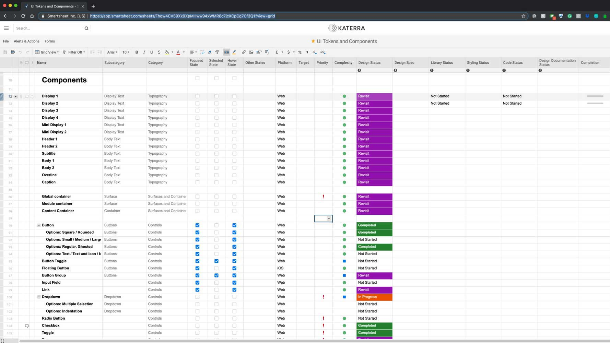
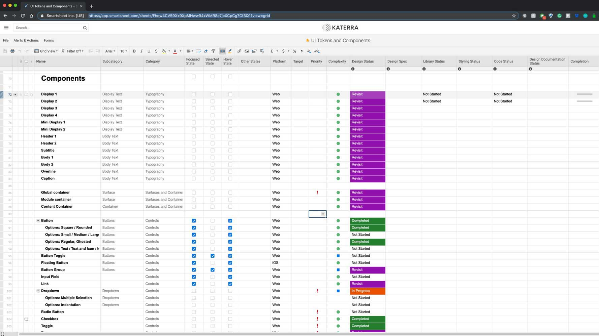

UI Design Systems & Tools
These tools help a wide range of scenarios, from the complex provisioning and installation of
interconnected
devices in all building units, to the management, maintenance, and troubleshooting of these systems while
in operation.
My work involved the creation of an entire UI Design System for the web
platform. I managed, designed, and developed a library of front-end components that were used by both
designers and developers to mock-up, prototype, and develop the final product.
The outcome
allowed for a single universal design source, avoiding design > development hand-off issues and creating a
much more efficient process.
Concept
Being a technology-focused company Katerra made used of many different software solutions in their construction process, most of these applications being developed in house started requiring design systems and specialized components to aid and improve the user experience throughout.
The design system was meant to initially provide components for a cloud-based unified platform that supported Katerra's Advanced Building ecosystem and lifecycle (Planning, Provisioning, Installation, Management, and Maintenance).

Planning
Architecture information, story maps, user analysis, helped to understand and assess the type of UI Controls and Components required to assemble a Design System that covered the initial development of the cloud-based platform.

Due to the vast approach the platform had, it was required to set a foundation that separated features into distinct module components, therefore making it easier to swap, add, or remove them as the platform adapted to future requirements.
Exploration & Prototyping
Heavy UX prototyping and iteration was used while designing custom components.


High-Fidelity Prototype & Pattern Samples
Together with a library of code-ready components I provided full samples of preassembled layouts and patterns in the form of a high-fidelity prototype that showcased all the components already running on the target web platform.
Developers were able to pick and choose these preassembled layouts and patterns directly from the library in order to get a head start in building the applications and its modules.

Component Library
As the component library ramped up, all the components were categorized and tracked for status, progression, target, type, etc. This helped me to name, manage, and build all these components in an efficient manne
 


Design Components
I developed libraries of code components that shared a similar source and therefore able to keep in sync throughout design and development, avoiding hand-off and visual design common issues.
These components could easily be imported into UI design tools like Framer in order to create mockups and rapid prototypes.